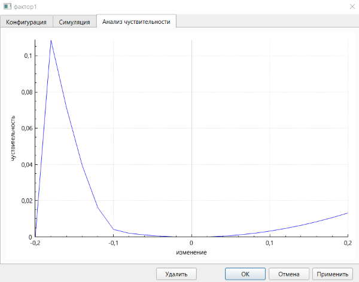

1. Sensitivity analysis of an FCM is performed on the sensitivity analysis tab. To switch to this tab from another tab, click the "Sensitivity analysis" header.
2. On this tab, FCM forecasting parameters and FCM notes can be changed. The notes field on this tab always contains the same content as the notes field on the model settings tab. In addition, work with the interactive area and its zoom is performed in the same way as on the simulation tab.
3. Initially, the tab shows the same FCM graph as the one displayed on the graph tab.
4. The user can set the following sensitivity analysis parameters: the maximum change that can be applied to a single element, and the element types that can be changed, that is, concepts and or weights.
5. To start the sensitivity analysis, click the "Analyze" button. The analysis may take a long time. A progress bar in the lower part of the tab shows the completion percentage.
6. Sensitivity analysis is performed both for each element and for the FCM as a whole:
6.1. Sensitivity analysis for each element:
6.1.1. The elements can be concepts and or weights according to the selection made in item 4.
6.1.2. During the analysis, each element is considered separately.
6.1.3. If forecasting is performed using numeric values, those values are changed within the range whose absolute value does not exceed the maximum change. The range is filled uniformly.
6.1.4. If forecasting is performed using fuzzy values, each parameter of the triangular fuzzy value is changed in the same way as a numeric value in the previous item, across all possible combinations. The resulting change is evaluated as the average of the absolute changes.
6.1.5. The results of this type of analysis are presented as follows:
6.1.5.1. Colors of FCM elements reflecting the average value of the change metric compared with the reference forecasting result.
6.1.5.2. Graphs showing the dependence of the change metric, compared with the reference forecasting result, on the change applied to an element. These graphs are available on the sensitivity analysis results tab of the element window, which opens when the element is right-clicked.
6.2. Sensitivity analysis for the FCM as a whole:
6.2.1. The selected elements are changed according to item 4.
6.2.2. A number of thresholds are considered, from 0, excluding 0 itself, up to the threshold specified according to item 4.
6.2.3. For each threshold, all elements are changed randomly by a value whose absolute value is smaller than the threshold. A large number of such experiments is performed for each threshold.
6.2.4. The result is presented as a graph showing the dependence of the average value of the change metric, relative to the reference forecasting result, on the threshold. To switch to this graph, click the "FCM sensitivity" button. To switch back, click the same button again, now labeled "Sensitivity of FCM elements".

7. After the analysis is completed, the state can be reset to the initial one, that is, the state before the analysis started, using the "Reset" button. If FCM parameters were changed after the analysis started, these changes appear again on the interactive area after the reset.